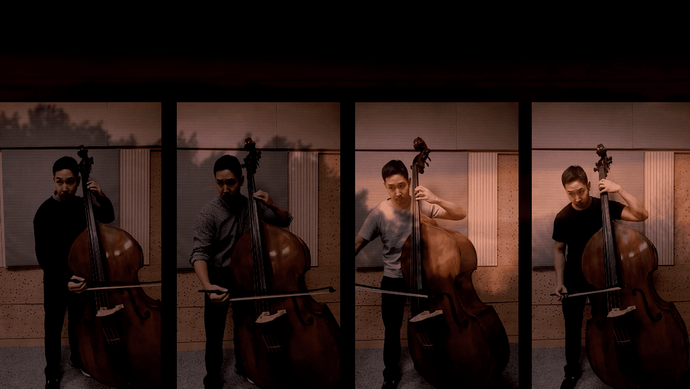

String Quintet for one Doublebass, 18’

예술 감독/Art director
이용우 Yongwoo Lee
작곡/Composition
Violin1: 신로
Violin2: 박선진
Viola: 김우석
Cello: 문소연
전자음향/Electronics
이용우
연주/Performer
임성환
녹음/Recording
이용우
영상촬영/Video recording
이용우
영상편집/Video Editing
김우석, 문소연, 박선진, 신로
영상출연/Actor
임성환
기술지원/Technical Assistant
이용우
Chapters of String Quintet
Chapter 0. Prelude
신로
Chapter 1. Debussy
박선진
Chapter 2. Schubert
문소연
Chapter 3. Stravinsky
영상 및 음원 자료 출처:
김우석
영상 및 음원 자료 출처: